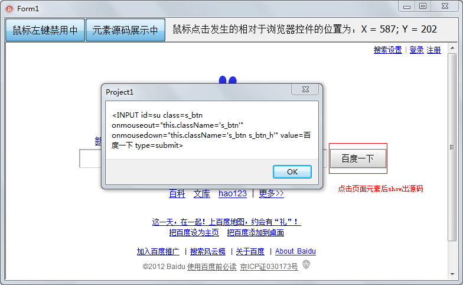

Hook这种技术是个好东东，弄好了感觉自己像hack一样哈哈。这节介绍一个简单的全局hook，用于屏蔽用户的鼠标左键点击。
顺带的，通过获取鼠标点击的坐标，找到用户正在点击的元素，把它的源码show出来。
程序完成后看起来像是这个样子滴。

MiscellaneaSourceCode1/Unit1.pas
第35行，线程钩子函数。
第43行，Form1不在最前则放过。这是当然的了，谁也不想Form1被最小化后还在默默的禁用着鼠标点击。
第48行，要求钩子代码nCode为HC_Action时才要hook，实践证明这句话是很有必要的。
第50行，判断是鼠标左键消息才要hook，右键滚轮之类的就放过了。
第66行，通过修正后的x，y坐标（相对于浏览器控件）来寻找页面对应的元素。
第73行，别忘了把消息传下去。